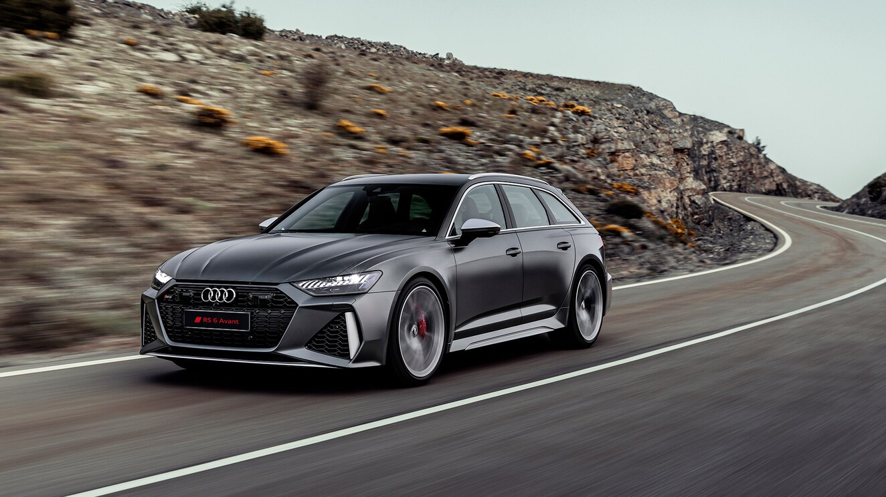
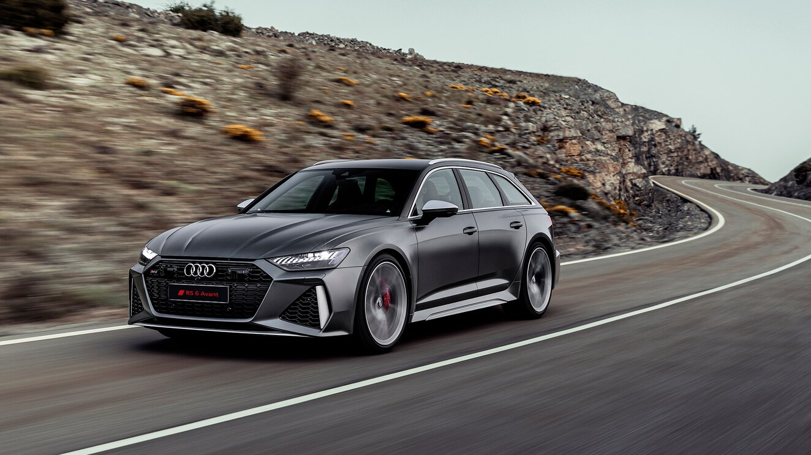

Audi RS6 C7
Хочешь немножко скорости и эстетики?
Прошу любить и жаловать, Audi rs6 Avant

По моему скромному мнению, один из самых красивых и универсальных автомобилей
Просто взгляните на неё ещё раз, она же прекрасна
 

Это машина в кузове унивeрсал
Перейдём к характеристикам?
- Двигатель: V8 4.0L мощностью 600 л.с и 800 н.м крутящий момент!
- Разгон 0-100: 3,6 сек
- Привод: полный "quattro"
- Цена: от 9 885 000 рублей (До 24.02.2022)
Цена на Б/У рынке тоже не самая приятная
Шикарный звук моторa, просто послушайте, на этом видео так же и разгон 0-305 км\ч
Ну ещё немножко фото